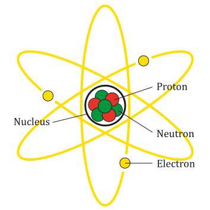
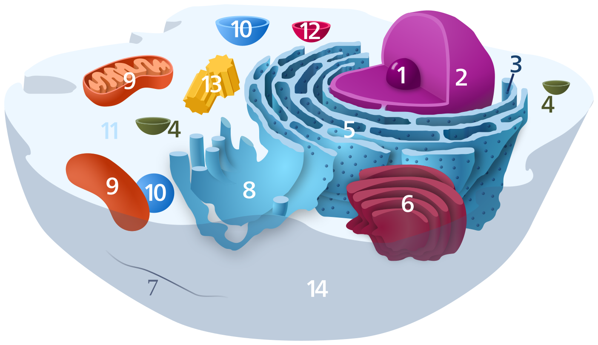
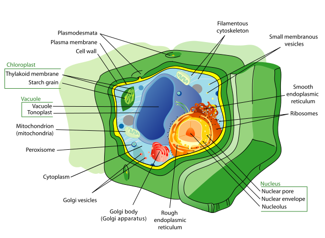
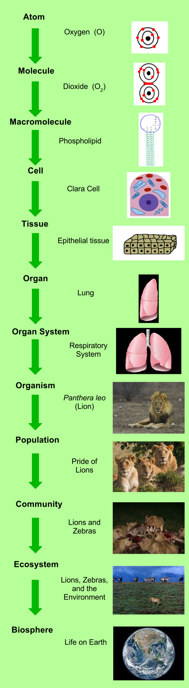
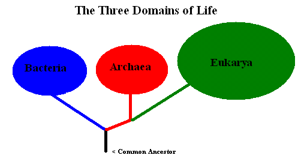
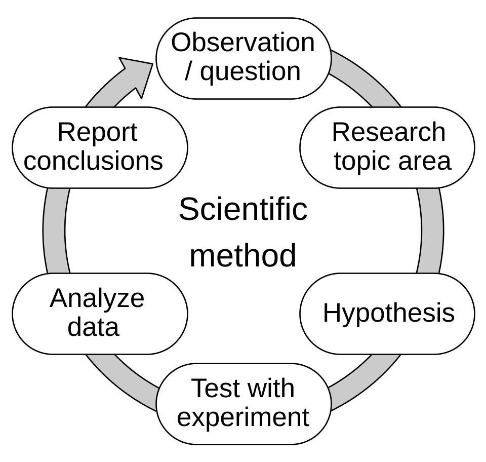

1. Peta materi
Biologi tidak dapat dipelajari sebagai daftar nama bagian tubuh. Materi ini disusun berurutan dari partikel terkecil menuju keseluruhan kehidupan di Bumi, sehingga setiap konsep menjadi dasar bagi konsep berikutnya.
Tingkat materi
|
Atom -> molekul -> makromolekul
|
Tingkat seluler
|
Organel -> sel
|
Tingkat jaringan dan organ
|
Jaringan -> organ -> sistem organ
|
Tingkat organisme
|
Organisme
|
Tingkat ekologi
|
Populasi -> komunitas -> ekosistem
|
Bioma -> biosfer
Di setiap tingkat berlaku proses kehidupan
|
Metabolisme, reproduksi, pertumbuhan,
respons, homeostasis, adaptasi, evolusi
Cara memperoleh pengetahuan
|
Observasi -> masalah -> hipotesis -> percobaan
|
Data -> analisis -> kesimpulan -> komunikasiAda dua arah yang dapat dipakai untuk memahami materi ini. Arah pertama menelusuri struktur dari bawah ke atas, yaitu dari atom menuju biosfer. Arah kedua mengikuti proses yang dijalankan makhluk hidup, yaitu metabolisme, homeostasis, dan reproduksi. Kedua arah tersebut saling melengkapi karena struktur menentukan kemungkinan proses, sedangkan proses mempertahankan kelangsungan hidup struktur tersebut.
2. Tujuan pembelajaran
Setelah mengikuti sesi ini, mahasiswa mampu menjelaskan pengertian dan ruang lingkup biologi, menguraikan hubungan atom, molekul, sel, dan tingkat organisasi kehidupan, menganalisis ciri-ciri makhluk hidup, serta menjelaskan bagaimana ilmuwan memperoleh pengetahuan secara sistematis melalui metode ilmiah.
| Tujuan | Indikator pemahaman |
|---|---|
| Menjelaskan pengertian biologi | Menyebutkan definisi biologi dan asal kata Yunani bios dan logos |
| Mengidentifikasi ruang lingkup biologi | Menyebutkan cabang biologi serta hubungannya dengan ilmu lain |
| Menjelaskan dasar materi kehidupan | Menguraikan atom, struktur atom, unsur, molekul, dan makromolekul biologis |
| Memahami sel sebagai unit kehidupan | Menjelaskan teori sel serta perbedaan sel prokariotik dan eukariotik |
| Mengurutkan tingkat organisasi kehidupan | Menyusun urutan dari atom hingga biosfer dengan benar |
| Menganalisis ciri makhluk hidup | Menjelaskan metabolisme, homeostasis, adaptasi, reproduksi, dan evolusi |
| Memahami cara memperoleh pengetahuan | Menjelaskan sikap ilmiah, fakta dan opini, serta tahapan metode ilmiah |
| Menerapkan metode ilmiah | Merancang percobaan sederhana yang melibatkan variabel bebas, terikat, dan kontrol |
3. Pengertian dan ruang lingkup biologi
Biologi adalah ilmu yang mempelajari kehidupan dan makhluk hidup. Definisi ini tampak sederhana, tetapi cakupannya sangat luas. Biologi tidak hanya mempelajari bagian tubuh manusia, tetapi juga struktur dan proses pada bakteri, tumbuhan, hewan, jamur, dan kelompok organisme lain.
Istilah biologi berasal dari bahasa Yunani, yaitu bios yang berarti hidup dan logos yang berarti pengetahuan. Secara harfiah, biologi berarti ilmu pengetahuan tentang kehidupan. Encyclopaedia Britannica merumuskan biologi sebagai kajian makhluk hidup dan proses-proses vitalnya, sedangkan OpenStax menyusun definisi yang lebih ringkas, yaitu kajian tentang kehidupan.
Ruang lingkup biologi meliputi empat pertanyaan besar. Pertama, apa yang membuat sesuatu itu hidup. Kedua, bagaimana kehidupan tersusun pada berbagai tingkat organisasi. Ketiga, bagaimana organisme berinteraksi satu sama lain dan dengan lingkungan. Keempat, bagaimana keanekaragaman kehidupan berubah dari waktu ke waktu melalui evolusi.
Keempat pertanyaan tersebut menjadi benang merah seluruh bidang biologi. Sitologi menjawab pertanyaan pertama pada tingkat sel. Ekologi menjawab pertanyaan kedua dan ketiga pada tingkat populasi hingga biosfer. Biologi evolusioner menjawab pertanyaan keempat pada seluruh skala kehidupan.
Empat pertanyaan dasar biologi
|
1. Apa yang membuat sesuatu itu hidup?
|
2. Bagaimana kehidupan tersusun bertingkat?
|
3. Bagaimana organisme berinteraksi?
|
4. Bagaimana kehidupan berubah dari waktu ke waktu?Ruang lingkup tersebut menjelaskan mengapa biologi tidak cukup dengan dihafal. Nama tulang, nama organ, atau klasifikasi tumbuhan memang perlu diketahui, tetapi nama akan bermakna hanya apabila dapat dikaitkan dengan fungsi dan proses yang melandasinya.
4. Cabang-cabang biologi
Cabang biologi dibagi menurut tingkat organisasi yang dikaji dan menurut jenis organisme yang menjadi objek kajian. Pembagian ini bersifat praktis untuk memudahkan belajar, bukan batas yang mutlak. Seorang peneliti dapat berada pada dua cabang sekaligus.
| Cabang | Objek kajian |
|---|---|
| Morfologi | Bentuk dan struktur bagian tubuh organisme |
| Anatomi | Struktur internal organisme |
| Sitologi | Struktur dan fungsi sel |
| Histologi | Jaringan tumbuhan dan hewan |
| Fisiologi | Fungsi dan proses kerja tubuh organisme |
| Ekologi | Hubungan organisme dengan lingkungan dan sesama organisme |
| Genetika | Pewarisan sifat dan mekanisme pewarisan |
| Biologi evolusioner | Perubahan dan kekerabatan organisme |
| Taksonomi dan sistematika | Klasifikasi dan penamaan organisme |
| Botani | Tumbuhan dan alga |
| Zoologi | Hewan |
| Mikrobiologi | Mikroorganisme seperti bakteri, jamur, dan protozoa |
| Biokimia | Reaksi kimia di dalam organisme |
| Biologi molekuler | Molekul biologis dan informasi yang dibawanya |
| Biogeografi | Sebaran geografis organisme |
| Biostatistika | Analisis data biologis secara statistik |
| Bioteknologi | Penerapan proses biologis untuk menghasilkan produk |
Bidang yang beririsan juga banyak. Biokimia dan biologi molekuler berada pada garis antara ilmu hayati dan ilmu alam dasar, sedangkan bioinformatika berada pada garis antara biologi dan ilmu komputer.
5. Peran biologi dalam kehidupan sehari-hari
Hasil kajian biologi muncul pada banyak bidang yang dipakai masyarakat. Pemahaman mengenai peran tersebut membantu melihat bahwa biologi bukan mata kuliah yang terpisah dari kehidupan nyata.
| Bidang | Contoh penerapan |
|---|---|
| Kesehatan | Diagnosis penyakit, produksi obat, vaksin, imunologi, dan mikrobiologi |
| Pertanian | Pemuliaan tanaman, pengendalian hama, pupuk hayati, dan kultur jaringan |
| Peternakan | Pembitian hewan dan pemilihan ras yang lebih produktif |
| Perikanan | Budidaya ikan dan pengelolaan wilayah tangkapan |
| Kehidupan liar | Konservasi, pemulihan ekosistem, dan pemantauan keanekaragaman hayati |
| Lingkungan | Pemantauan pencemaran dan kualitas air |
| Industri | Fermentasi, produksi enzim, pengolahan pangan, dan biofarmasi |
| Forensik | Analisis DNA untuk menentukan identitas |
| Teknologi informasi | Analisis data genomika dan pemodelan populasi |
Penerapan bioteknologi dapat meningkatkan produksi pangan, tetapi juga memunculkan pertanyaan mengenai keanekaragaman genetik dan dampak lingkungan. Ilmu membantu dalam menilai pilihan tersebut secara rasional.
6. Biologi sebagai ilmu yang dapat diuji
Istilah sains berasal dari bahasa Latin scientia yang berarti pengetahuan. Sains adalah pengetahuan umum yang diperoleh melalui pengujian. Karena itu, sebuah pernyataan disebut ilmiah apabila dapat diuji dan diuji kembali oleh orang lain.
Dalam biologi, pengujian dilakukan dengan pengamatan, eksperimen, dan perbandingan. Contoh pengujian berupa pengukuran diameter sel dengan mikroskop, pengukuran laju pertumbuhan, atau pengujian dugaan bahwa tanaman memerlukan nitrogen untuk tumbuh. Pernyataan yang tidak dapat diuji, misalnya tanaman lebih bagus daripada tanaman lain karena terlihat lebih hias, tidak termasuk pernyataan ilmiah.
Ilmuwan umumnya bekerja dalam dua cara yang saling melengkapi. Ilmu deskriptif bertujuan mengamati dan mencatat kenyataan tanpa menguji dugaan. Ilmu berbasis hipotesis bertujuan menguji dugaan melalui eksperimen yang dirancang secara sengaja.
7. Materi dan energi
Materi adalah segala sesuatu yang memiliki massa dan menempati ruang. Contoh materi meliputi air, udara, tanah, batu, makanan, tubuh manusia, tumbuhan, dan bakteri. Materi pada tingkat yang sangat kecil tersusun atas partikel, dan partikel terkecil yang masih mempertahankan identitas suatu unsur disebut atom.
Energi adalah kemampuan melakukan kerja atau menghasilkan perubahan. Energi hanya berubah bentuk, misalnya dari energi kimia menjadi energi listrik pada sel, atau dari energi cahaya menjadi energi kimia pada fotosintesis. Tubuh organisme memakai energi untuk menyusun molekul, bergerak, memompa zat, dan menjaga keadaan internal.
| Bentuk energi | Peran pada organisme |
|---|---|
| Energi kimia | Tersimpan pada makromolekul seperti karbohidrat, lipid, dan protein |
| Energi cahaya | Dipakai organisme fotosintetik untuk menyusun gula |
| Energi listrik | Menggerakkan impuls saraf dan kerja ion pada membran sel |
| Energi mekanik | Gerakan otot, gerak flagel, dan perpindahan cairan |
| Energi panas | Hasil sampingan reaksi yang tidak dipakai untuk kerja sel |
8. Atom
Atom adalah unit terkecil suatu unsur yang masih mempertahankan identitas kimia unsur tersebut dan dapat berperan dalam reaksi kimia. Unsur yang berbeda dibedakan oleh jumlah proton dalam atomnya.
Istilah atom berasal dari bahasa Yunani atomos yang berarti tidak dapat dipotong. Gagasan ini kemudian berkembang menjadi teori atom melalui penelitian mengenai hukum-hukum kimia yang diamati pada reaksi dan pengukuran massa. Teori atom Dalton menjadi dasar pemahaman modern tentang atom.
Catatan penting perlu disampaikan di sini. Dalam ilmu modern, atom bukan partikel yang benar-benar tidak dapat dibagi. Atom tersusun atas partikel yang lebih kecil lagi, yaitu proton, neutron, dan elektron.
9. Struktur atom
Atom memiliki tiga jenis partikel subatom utama. Proton dan neutron membentuk inti atom atau nukleus. Elektron berada pada wilayah di luar inti yang dalam penggambaran sederhana sering disebut kulit elektron.
| Partikel | Muatan | Massa relatif | Lokasi |
|---|---|---|---|
| Proton | +1e | 1 | Di dalam nukleus |
| Neutron | 0 | 1 | Di dalam nukleus |
| Elektron | −1e | 1/1836 | Di luar nukleus |
Jumlah proton disebut nomor atom dan menentukan identitas unsur. Jumlah elektron pada atom yang bermuatan netral sama dengan jumlah proton. Kelebihan elektron membuat atom bermuatan negatif, sedangkan kekurangan elektron membuat atom bermuatan positif.
Model sederhana atom
|
elektron pada kulit luar
.---------------------.
/ e e e \
| INTI |
| proton p = +1 |
| neutron n = 0 |
\ e e /
'---------------------'
|
Catatan: gambar ini hanya model sederhana.
Model modern memakai konsep orbital dan
peluang keberadaan elektron.Model planet yang sering dipakai di sekolah memberi kesan bahwa elektron mengitari inti seperti planet mengitari Matahari. Model ini berguna sebagai gambaran visual, tetapi secara ilmiah elektron tidak mengikuti lintasan tetap. Posisi elektron dinyatakan sebagai peluang menemukan elektron pada suatu daerah, bukan sebagai نقطة yang pasti.
10. Unsur dan tabel periodik
Unsur adalah zat yang seluruh atomnya memiliki jumlah proton yang sama. Contohnya karbon, oksigen, hidrogen, nitrogen, dan natrium. Tabel periodik mengelompokkan unsur berdasarkan jumlah proton dan pola sifat kimianya, sehingga hubungan antarunsur dapat dibaca dengan cepat.
| Unsur | Simbol | Nomor atom | Peran dalam kehidupan |
|---|---|---|---|
| Hidrogen | H | 1 | Bagian air, asam amino, dan ikatan antaratom |
| Karbon | C | 6 | Kerangka molekul organik |
| Nitrogen | N | 7 | Protein, asam nukleat, dan klorofil |
| Oksigen | O | 8 | Respirasi, air, dan konstituen molekul organik |
| Fosfor | P | 15 | ATP, asam nukleat, dan membran sel |
| Sulfur | S | 16 | Asam amino sistein dan metionin |
| Kalium | K | 19 | Gradien ion pada membran dan aktivitas enzim |
| Natrium | Na | 11 | Gradien ion, transmisi impuls saraf, dan keseimbangan cairan |
| Kalsium | Ca | 20 | Kontraksi otot, koagulasi darah, dan struktur tulang |
| Magnesium | Mg | 12 | Pusat atom pada klorofil |
| Klor | Cl | 17 | Gradien ion dan keseimbangan cairan tubuh |
11. Dari atom menjadi molekul
Atom dapat berikatan dengan atom lain melalui ikatan kimia. Ketika dua atom atau lebih terikat, terbentuk molekul. Molekul adalah struktur kimia yang tersusun atas sekurang-kurangnya dua atom yang dihubungkan oleh satu atau lebih ikatan kimia.
Ada tiga jenis utama ikatan yang berperan pada molekul biologis. Ikatan ion terbentuk karena tarikan antara muatan berbeda. Ikatan kovalen terjadi karena pemakaian bersama pasangan elektron. Ikatan hidrogen terbentuk antara atom hidrogen yang bermuatan parsial positif dan atom yang memiliki pasangan elektron bebas.
| Jenis ikatan | Mekanisme | Contoh |
|---|---|---|
| Ikatan ionik | Tarikan elektrostatik antara ion | Na dan Cl pada garam |
| Ikatan kovalen | Pemakaian bersama pasangan elektron | C dan H pada metana |
| Ikatan hidrogen | Tarikan parsial pada H dan atom elektronegatif | Antaruntun air dan pasangan basa DNA |
Molekul air memiliki bentuk yang tidak simetris sehingga bersifat polar. Sifat polar inilah yang membuat air menjadi pelarut baik bagi banyak zat berion maupun zat polar, dan sekaligus membuat molekul air dapat membentuk ikatan hidrogen dengan molekul lain.
H + O + H -> H2O
O + O -> O2
C + O + O -> CO212. Makromolekul biologis
Makromolekul adalah molekul berukuran besar yang biasanya terbentuk melalui polimerisasi, yaitu penggabungan banyak unit kecil yang disebut monomer. Empat kelompok makromolekul biologis utama meliputi karbohidrat, lipid, protein, dan asam nukleat.
| Kelompok | Contoh | Fungsi utama |
|---|---|---|
| Karbohidrat | Glukosa, pati, glikogen, selulosa | Sumber energi, penyimpanan energi, dan struktur |
| Lipid | Lemak, fosfolipid, steroid, lilin | Cadangan energi, penyusun membran, perlindungan, dan sinyal |
| Protein | Enzim, antibodi, keratin, hemoglobin, reseptor | Katalis, pengangkut, struktural, kontraktil, dan pengenal |
| Asam nukleat | DNA dan RNA | Penyimpanan dan penggunaan informasi genetik |
Enzim merupakan protein yang berfungsi sebagai katalis biologis. Enzim menurunkan energi aktivasi sehingga reaksi dapat berlangsung lebih cepat tanpa ikut berubah dalam reaksi tersebut. Setiap enzim umumnya bekerja pada substrat tertentu dan pada kondisi suhu serta pH tertentu.
13. Sel sebagai unit dasar kehidupan
Sel adalah unit dasar kehidupan. Sel bukan sekadar bagian kecil tubuh, melainkan unit yang memiliki struktur dan sistem sehingga dapat menjalankan berbagai proses kehidupan seperti nutrisi, respirasi, sintesis protein, dan reproduksi.
OpenStax menegaskan bahwa sel merupakan unit dasar kehidupan dan bahwa seluruh organisme tersusun atas satu atau lebih sel. Konsep ini penting karena sebagian besar kajian biologi modern bekerja pada tingkat sel.
Menurut definisi ini, virus tidak termasuk makhluk hidup. Virus tidak tersusun atas sel dan tidak dapat berkembang biak sendiri. Untuk memperbanyak diri, virus harus mengambil alih mekanisme reproduksi sel inang yang hidup.
| Jenis | Contoh | Keterangan |
|---|---|---|
| Uniseluler | Bakteri, Amoeba, Paramecium | Satu sel melakukan seluruh fungsi kehidupan |
| Kolonial | Volvox dan beberapa kolonial bryozoa | Banyak sel membentuk koloni yang tersusun |
| Multiseluler | Manusia, pohon, ikan | Sel membentuk jaringan, organ, dan sistem |
14. Teori sel
Teori sel modern memiliki tiga gagasan dasar. Pertama, seluruh makhluk hidup tersusun atas satu atau lebih sel. Kedua, sel merupakan unit dasar kehidupan. Ketiga, sel baru berasal dari sel yang sudah ada sebelumnya.
Robert Hooke, 1665
|
Memeriksa potongan kayu gabus dan melihat
ruang-ruang kecil yang menyerupai sel jantung
|
Istilah "sel" berasal dari bahasa Latin
cellula yang berarti ruang kecil
|
Antoni van Leeuwenhoek
|
Mengamati mikroorganisme hidup pada air
|
Matthias Schleiden dan Theodor Schwann
|
Menyusun gagasan bahwa seluruh makhluk hidup
tersusun atas sel
|
Robert Remak dan Rudolf Virchow
|
Menyatakan bahwa setiap sel berasal dari sel lain
|
TEORI SEL MODERNGagasan bahwa sel berasal dari sel yang sudah ada sebelumnya penting bagi perkembangan ilmu. Joachim Beale dan Rudolf Virchow membantu mengenalkan gagasan ini, yang umum dikenal sebagai doktrin omnis cellula e cellula.
Konsep tersebut menjelaskan bahwa manusia tidak terbentuk sebagai organisme utuh dari nol. Pertumbuhan manusia melibatkan pembelahan sel yang berulang, kemudian diferensiasi sehingga terbentuk sel-sel khusus dengan fungsi yang berbeda.
15. Mikroskop
Sebagian besar sel berukuran sangat kecil sehingga tidak dapat dilihat dengan mata telanjang. Batas penglihatan mata manusia adalah sekitar 0,1 milimeter atau 100 mikrometer. Mikroskop diperlukan untuk melihat struktur yang lebih kecil dari batas tersebut.
| Aspek | Mikroskop cahaya | Mikroskop elektron |
|---|---|---|
| Sumber | Cahaya tampak | Berkas elektron |
| Perbesar maksimum | Sekitar 1000 kali | Hingga 100.000 kali |
| Batas resolusi | Sekitar 200 nanometer | Sekitar 0,1 nanometer |
| Benda hidup | Dapat diamati | Tidak dapat diamati |
| Sampel | Mudah disiapkan | Perlu fiksasi dan pelapisan logam |
| Kesan struktur | Dapat melihat bagian dalam sel | Dapat melihat membran dan organel kecil |
Istilah resolusi perlu dibedakan dari perbesar. Perbesar membuat objek tampak lebih besar, sedangkan resolusi menentukan apakah dua objek berdekatan dapat dipisahkan. Mikroskop cahaya memiliki resolusi sekitar 200 nanometer, sehingga virus dan organel kecil masih berada di luar batas pengamatan.
Perbesar total mikroskop diperoleh dengan mengalikan perbesar objektif dengan perbesar okular. Objektif 40 kali dengan okular 10 kali menghasilkan perbesar total 400 kali.
16. Sel prokariotik
Sel prokariotik adalah sel yang tidak mempunyai nukleus yang dibungkus membran. Materi genetiknya berada pada daerah yang disebut nukleoid, dan DNA tersebut umumnya berbentuk lingkaran.
| Aspek | Keterangan |
|---|---|
| Nukleus | Tidak ada nukleus bermembran |
| Materi genetik | DNA berbentuk lingkaran pada nukleoid, sering dengan plasmid |
| Ukuran | Umumnya kecil, sekitar 1 sampai 10 mikrometer |
| Ribosom | Ada, tetapi lebih kecil dan berbeda dari ribosom eukariot |
| Organel bermembran | Tidak ada mitokondria, kloroplas, maupun aparatus Golgi |
| Dinding sel | Umumnya ada dan mengandung peptidoglikan |
| Contoh | Bakteri dan Archaea |
17. Sel eukariotik
Sel eukariotik memiliki nukleus yang dibungkus membran inti serta organel bermembran lainnya. Sel eukariotik umumnya lebih besar dan lebih kompleks dibandingkan sel prokariotik.
| Aspek | Prokariotik | Eukariotik |
|---|---|---|
| Ukuran | 1 sampai 10 mikrometer | 10 sampai 100 mikrometer |
| Nukleus | Tidak ada | Ada, dibungkus membran |
| DNA | Lingkaran, tanpa histon | Linear, berpasangan dengan histon |
| Organel bermembran | Tidak ada | Ada |
| Ribosom | 70S | 80S pada sitoplasma |
| Pembelahan | Mitosis tidak terjadi | Mitosis dan meiosis |
| Contoh | Bakteri, Archaea | Hewan, tumbuhan, jamur, protista |
Sel prokariotik Sel eukariotik
| |
tidak ada nukleus bermembran nukleus bermembran
| |
DNA lingkaran DNA linear
| |
tidak ada organel bermembran organel bermembran
| |
membran plasma membran plasma
| |
BAKTERI, ARCHAEA HAYAWAN, TUMBUHAN,
JAMUR, PROTISTA18. Organel sel
Organel adalah struktur kecil di dalam sel yang menjalankan fungsi tertentu. Sel dapat diibaratkan sebagai kota yang setiap bagiannya memiliki tugas tertentu. Organel pada sel eukariotik dikelompokkan berikut.
| Organel | Fungsi |
|---|---|
| Nukleus | Menyimpan sebagian besar DNA dan mengatur banyak aktivitas sel |
| Ribosom | Tempat sintesis protein |
| Mitokondria | Menghasilkan sebagian besar ATP melalui respirasi seluler |
| Kloroplas | Tempat fotosintesis pada tumbuhan dan alga |
| Retikulum endoplasma kasar | Terikat ribosom dan berperan dalam sintesis protein |
| Retikulum endoplasma halus | Berperan dalam sintesis lipid dan pengangkutan zat |
| Aparatus Golgi | Memproses, menyortir, dan mengemas molekul |
| Lisosom | Menguraikan berbagai material di dalam sel hewan |
| Peroksisom | Menguraikan asam lemak dan menghasilkan peroksida |
| Sitoskeleton | Memberi bentuk sel, menahan organel, dan memudahkan gerak |
| Vakuola sentral | Menyimpan air dan zat terlarut, terutama pada sel tumbuhan |
Sel tumbuhan dan sel hewan memiliki kesamaan besar, tetapi juga perbedaan. Sel tumbuhan umumnya memiliki dinding sel, kloroplas, dan vakuola sentral yang besar. Sel hewan tidak memiliki ketiga struktur tersebut, tetapi memiliki lisosom yang berkembang baik serta sentrosom untuk membantu pembelahan.
19. Membran plasma
Membran plasma atau membran sel membungkus seluruh isi sel dan mengatur pertukaran zat antara sel dengan lingkungannya. Membran tersusun atas lapisan ganda fosfolipid dengan protein yang tertanam di dalamnya.
Luar sel
|
| protein kanal dan protein pembawa
| fosfolipid fosfolipid fosfolipid
|====================================|
| protein pengangkut protein reseptor
| fosfolipid fosfolipid fosfolipid
|====================================|
| protein enzim protein kerangka
|
Dalam selMembran bersifat semipermeabel karena lapisan ganda fosfolipid hanya dapat dilalui oleh sebagian kecil molekul. Molekul besar dan bermuatan memerlukan protein pembawa untuk melewati membran. Contohnya ion natrium dan kalium memerlukan pompa khusus.



Model membran yang umum dipakai saat ini adalah model mosaik fluida. Istilah mosaik menunjukkan adanya protein yang tersebar di antara lipid, sedangkan fluida menunjukkan bagian lipid dapat bergerak ke samping sehingga membran bersifat lentur.
20. Tingkat organisasi kehidupan
Seluruh kehidupan tersusun berjenjang dari partikel terkecil sampai ke seluruh permukaan Bumi. Urutan lengkap dapat dimulai dari tingkat kimia.
ATOM
|
MOLEKUL
|
MAKROMOLEKUL
|
ORGANEL
|
SEL
|
JARINGAN
|
ORGAN
|
SISTEM ORGAN
|
ORGANISME
|
POPULASI
|
KOMUNITAS
|
EKOSISTEM
|
BIOMA
|
BIOSFER
Urutan tersebut bukan sekadar daftar. Setiap tingkat memiliki ciri khas yang tidak dimiliki oleh tingkat sebelumnya. Molekul memiliki ikatan kimia, sel memiliki membran dan organel, jaringan memiliki fungsi khusus, dan ekosistem memiliki interaksi antara komponen biotik dan abiotik.
Urutan tersebut berjalan dua arah. Dalam arah naik, bagian-bagian kecil menyusun bagian yang lebih besar. Dalam arah turun, perubahan pada tingkat yang lebih besar dapat memengaruhi tingkat yang lebih kecil. Contohnya, kekeringan dapat mengubah jaringan tumbuhan, yang kemudian memengaruhi sel, molekul, dan akhirnya gen yang dipakai untuk membuat protein.
21. Jaringan
Jaringan adalah kumpulan sel yang memiliki struktur serupa dan menjalankan fungsi yang berkaitan. Pada tumbuhan, jaringan dasar meliputi jaringan meristem, epidermis, fundamental, dan pengangkut.
| Jaringan | Letak dan fungsi |
|---|---|
| Jaringan meristem | Sel muda yang aktif membelah dan menambah jumlah jaringan |
| Jaringan epidermis | Lapisan luar pada tumbuhan, melindungi dan mengatur pertukaran gas |
| Jaringan fundamental | Jaringan dasar tumbuhan yang menyimpan cadangan makanan |
| Jaringan pengangkut | Mengangkut air, mineral, dan hasil fotosintesis |
| Jaringan epitel | Melapisi permukaan tubuh dan mengisi rongga dalam |
| Jaringan ikat | Menghubungkan, menopang, dan melindungi organ |
| Jaringan otot | Menghasilkan kontraksi sehingga tubuh dapat bergerak |
| Jaringan saraf | Menerima, meneruskan, dan memproses rangsangan |
22. Organ dan sistem organ
Organ adalah struktur yang tersusun atas beberapa jenis jaringan yang bekerja bersama untuk menjalankan fungsi tertentu. Contohnya jantung tersusun atas jaringan otot, jaringan saraf, jaringan ikat, dan jaringan pembuluh darah yang bersama-sama menghasilkan fungsi pemompaan darah.
Sistem organ merupakan tingkat berikutnya. Sistem organ terdiri atas organ-organ yang bekerja sama untuk menjalankan satu fungsi besar.
| Sistem | Organ utama | Fungsi |
|---|---|---|
| Pencernaan | Mulut, kerongkongan, lambung, usus, hati, pankreas | Mencerna makanan dan menyerap zat |
| Peredar darah | Jantung, pembuluh darah, darah | Mengangkut zat dan oksigen ke seluruh tubuh |
| Respirasi | Hidung, trakea, bronkus, paru-paru | Menyediakan oksigen dan mengeluarkan karbon dioksida |
| Ekskresi | Ginjal, ureter, kandung kencing, uretra | Mengatur air dan membuang sisa metabolisme |
| Reproduksi | Testis, ovarium, rahim, bakal biji, dan biji | Menghasilkan keturunan |
| Saraf | Otak, medula spinalis, saraf perifer | Mengkoordinasikan respons tubuh |
| Gerak | Otot, tulang, tendon, ligamen, sendi | Menghasilkan gerak dan menopang tubuh |
Organ tidak selalu bekerja sendirian. Jantung memerlukan paru-paru untuk memperoleh oksigen, dan memerlukan hati untuk memproses zat yang tiba dari saluran pencernaan. Hubungan antarorgan tersebut menjelaskan mengapa gangguan pada satu organ dapat memengaruhi organ lain.
23. Organisme, populasi, dan komunitas
Organisme adalah satu individu makhluk hidup. Satu manusia, satu kucing, satu pohon mangga, dan satu bakteri masing-masing merupakan satu organisme.
Populasi adalah kumpulan individu dari spesies yang sama yang hidup pada wilayah tertentu dan memiliki potensi untuk berinteraksi. Seratus ekor ikan nila dalam satu kolam dapat dianggap sebagai satu populasi apabila memenuhi syarat wilayah dan interaksinya.
Komunitas adalah kumpulan berbagai populasi yang hidup pada suatu wilayah dan berinteraksi satu sama lain. Di sebuah kolam terdapat populasi ikan, populasi tumbuhan air, populasi plankton, populasi bakteri, dan populasi serangga. Gabungan seluruh populasi tersebut membentuk komunitas.
| Aspek | Organisme | Populasi | Komunitas |
|---|---|---|---|
| Satuan | Satu individu | Kumpulan individu satu spesies | Kumpulan berbagai populasi |
| Wilayah | Tidak dibatasi wilayah | Wilayah tertentu | Wilayah tertentu |
| Contoh | Satu pohon jati | Hutan jati pada satu wilayah | Seluruh organisme pada hutan tersebut |
24. Ekosistem
Ekosistem lebih luas lagi karena memasukkan komponen tidak hidup. Ekosistem merupakan kesatuan antara komunitas organisme hidup dan lingkungan abiotik tempat mereka hidup beserta interaksinya.
EKOSISTEM
|
+-- komponen biotik
| tumbuhan, hewan, bakteri,
| jamur, plankton
|
+-- komponen abiotik
| air, udara, tanah, cahaya,
| suhu, pH, mineral, kelembapan
|
+-- interaksi di antaranya
aliran energi, daur zat,
hubungan makan-dimakanPada ekosistem, energi mengalir masuk dari luar, terutama cahaya matahari, dan berpindah dari satu tingkat trofik ke tingkat trofik berikutnya. Sebaliknya, zat berupa air, karbon, nitrogen, dan mineral berputar dalam daur di dalam ekosistem. Perbedaan antara aliran energi dan daur zat penting untuk memahami cara kerja ekosistem.
Energi mengalir satu arah dan kehilangan sebagian besar sebagai panas pada setiap perpindahan tingkat trofik. Zat justru didaur ulang sehingga dapat dipakai berulang kali. Karena itu, ekosistem yang kehilangan besar energi akan segera mengalami gangguan.
25. Bioma dan biosfer
Bioma adalah wilayah ekologi yang sangat luas dengan kondisi lingkungan dan komunitas organisme yang khas. Nama bioma biasanya diambil dari bentuk vegetasi dominan di wilayah tersebut.
| Bioma | Ciri lingkungan | Vegetasi dominan |
|---|---|---|
| Hutan hujan tropis | Hujan tinggi, suhu tinggi, keanekaragaman tinggi | Pohon tinggi berlapis |
| Hutan gugur daun | Musim dingin dan hangat | Pohon yang kehilangan daun pada musim dingin |
| Taiga | Suhu sangat dingin, curah hujan sedang | Konifer seperti cemara dan pinus |
| Tundra | Suhu sangat dingin, tanah beku sebagian | Tumbuhan pendek dan lumut |
| Padang rumput | Curah hujan sedang, gangguan api | Rumput dan herba |
| Gurun | Curah hujan sangat sedikit, suhu ekstrem | Tumbuhan annual yang tahan kekeringan |
| Wetland | Tanah jenuh air secara terus-menerus | Tumbuhan air dan rawa |
Biosfer adalah keseluruhan bagian Bumi yang mendukung kehidupan. Biosfer meliputi daratan, perairan, dan bagian atmosfer tempat kehidupan dapat berlangsung. Biosfer merupakan tingkat organisasi kehidupan yang paling luas.
ORGANISME
|
POPULASI
|
KOMUNITAS
|
EKOSISTEM
|
BIOMA
|
BIOSFER26. Ciri-ciri makhluk hidup
OpenStax merangkum ciri-ciri kehidupan menjadi delapan karakteristik utama. Kedelapan ciri tersebut dipakai untuk membedakan makhluk hidup dari benda mati.
| Karakteristik | Penjelasan |
|---|---|
| Keteraturan dan organisasi | Struktur tersusun berjenjang dari atom hingga organisme |
| Respons terhadap lingkungan | Merespons rangsangan seperti cahaya, panas, dan bahan kimia |
| Reproduksi | Mampu menghasilkan keturunan agar generasi berlanjut |
| Adaptasi | Memiliki ciri yang membantu hidup pada lingkungannya |
| Pertumbuhan dan perkembangan | Berubah ukuran, bentuk, dan fungsi selama hidup |
| Regulasi dan homeostasis | Mempertahankan keadaan internal dalam rentang tertentu |
| Pemrosesan energi | Menggunakan dan melepaskan energi melalui metabolisme |
| Evolusi | Perubahan sifat populasi dari generasi ke generasi |
Tidak ada satu ciri pun yang menjadi syarat tunggal. Api yang menyala memiliki beberapa ciri, tetapi tidak melakukan metabolisme dan tidak bereproduksi. Karena itu, penentuan apakah sesuatu itu hidup selalu mempertimbangkan gabungan seluruh ciri tersebut.
27. Metabolisme
Metabolisme adalah keseluruhan reaksi kimia yang berlangsung di dalam organisme atau sel. Metabolisme mencakup proses memecah makanan, menghasilkan energi, membuat protein, membuat DNA, menyimpan energi, dan menggunakan energi.
Seluruh reaksi kimia di dalam sel yang menggunakan atau melepaskan energi termasuk dalam lingkup metabolisme. Karena metabolisme berlangsung terus-menerus, organisme harus memperoleh bahan bakar dan energi dari lingkungan secara terus-menerus juga.
Metabolisme dapat dibedakan menjadi dua arah yang saling melengkapi. Katabolisme memecah molekul kompleks menjadi molekul yang lebih sederhana sambil melepaskan energi. Anabolisme menyusun molekul sederhana menjadi molekul yang lebih kompleks dengan memakai energi.
28. Katabolisme dan anabolisme
KATABOLISME
|
molekul kompleks
|
v
molekul lebih sederhana + energi dapat dipakai
|
contoh: glikogen dipecah menjadi glukosa
ANABOLISME
|
molekul sederhana
|
v
molekul kompleks + energi dibutuhkan
|
contoh: asam amino disusun menjadi protein
nukleotida disusun menjadi DNAKedua arah tersebut tidak terpisah. Hasil katabolisme seperti ATP dan asam amino dipakai sebagai bahan dasar anabolisme. Hubungan dua arah itu membuat metabolisme berjalan sebagai satu sistem yang utuh.
| Aspek | Katabolisme | Anabolisme |
|---|---|---|
| Arah | Kompleks menjadi sederhana | Sederhana menjadi kompleks |
| Energi | Melepaskan energi | Memerlukan energi |
| Contoh | Glikolisis, respirasi seluler | Sintesis protein, fotosintesis |
| Peran | Menyediakan energi dan bahan awal | Membangun struktur dan bahan kerja |
29. ATP sebagai mata uang energi
Adenosin trifosfat atau ATP sering disebut sebagai mata uang energi sel karena sel menggunakannya untuk menjalankan berbagai kerja biologis. ATP tersusun atas basa adenin, gula ribosa, dan tiga gugus fosfat yang diberi label alfa, beta, dan gamma.
Energi yang dibebaskan pada hidrolisis ATP dalam kondisi standar sekitar 30,5 kilojoule per mol. Di dalam sel yang sedang aktif, nilai tersebut dapat menjadi sekitar 57 kilojoule per mol karena kondisi di dalam sel tidak sama dengan kondisi standar.
ATP tidak menyediakan energi karena satu ikatan tertentu yang sangat kuat. Energi muncul karena produk reaksi, yaitu ADP dan fosfat anorganik, memiliki energi bebas yang lebih rendah daripada pereaksi ADP dan air. Sel kemudian memakai energi itu melalui pengkoplan, yaitu menggabungkan reaksi yang melepaskan energi dengan reaksi yang memerlukan energi.
Contoh pengkoplan energi pada sel terdapat pada pompa natrium-kalium. Pompa tersebut mengeluarkan tiga ion natrium dan memasukkan dua ion kalium untuk setiap satu ATP yang dihidrolisis. Fosfat dari ATP dipindahkan ke protein pompa, dan perubahan bentuk protein tersebut memungkinkan ion natrium keluar serta kalium masuk.
| Aktivitas | Peran ATP |
|---|---|
| Kontraksi otot | Menggerak filamen aktin dan miosin |
| Transpor aktif | Menggerakkan pompa ion melalui membran |
| Sintesis protein | Menyediakan energi untuk ikatan peptida dan translasi |
| Replikasi DNA | Menyediakan energi untuk polimerase |
| Gerakan silia dan flagel | Menjalankan motor protein |
30. Reproduksi
Makhluk hidup mempunyai kemampuan menghasilkan keturunan. Reproduksi menjamin bahwa jenis kehidupan tertentu tidak hilang ketika individu tersebut mati.
| Aspek | Aseksual | Seksual |
|---|---|---|
| Pelibatan gamet | Tidak ada | Ada |
| Jumlah induk | Satu induk | Dua induk |
| Kecepatan | Cepat | Lebih lambat |
| Variasi keturunan | Sangat sedikit | Lebih banyak |
| Contoh | Membelah diri, tunas, spora, vegetatif | Berlangkap, bertelur, melahirkan |
Reproduksi seksual tidak selalu melibatkan penggabungan dua gamet dari dua induk berbeda. Pada tumbuhan dan beberapa hewan, pembuahan terjadi sendiri. Pada beberapa organisme, keturunan berkembang biak tanpa perkawinan sama sekali.
31. Pertumbuhan dan perkembangan
Makhluk hidup dapat mengalami perubahan ukuran dan bentuk selama hidupnya. Perubahan tersebut mencakup pertumbuhan dan perkembangan yang keduanya tidak dapat dipisahkan.
ZIGOT
|
EMBRIO
|
BAYI
|
ANAK
|
REMAJA
|
DEWASA
|
LANGSIAPertumbuhan tidak sekadar berarti menjadi lebih besar. Dalam biologi, perkembangan juga mencakup perubahan struktural dan fungsional. Contohnya, sel embrio yang sama berkembang menjadi sel otot, sel saraf, atau sel kulit yang memiliki fungsi sangat berbeda.
32. Respons terhadap lingkungan
Makhluk hidup mampu merespons rangsangan. Pada hewan, respons terhadap rangsangan berlangsung melalui rangkaian dari reseptor hingga gerakan otot.
Rangsangan panas
|
Reseptor mendeteksi
|
Sinyal saraf
|
Pemrosesan di pusat saraf
|
Otot berkontraksi
|
Tangan ditarikTumbuhan juga memberikan respons, tetapi melalui mekanisme yang berbeda karena tidak memiliki sistem saraf. Contohnya, akar tumbuhan menjauhi cahaya, sedangkan batang menuju cahaya. Respons tersebut disebut fototropisme.
| Organisme | Rangsangan | Respons |
|---|---|---|
| Manusia | Suhu panas | Keringat meningkat |
| Manusia | Cahaya terang | Dilipit mata |
| Tumbuhan | Cahaya dari satu sisi | Batang membungkuk ke arah cahaya |
| Tumbuhan | Berat | Akar tumbuh ke bawah |
| Bakteri | Zat kimia | Bergerak menuju atau menjauhi zat |
33. Homeostasis
Homeostasis adalah kemampuan organisme mempertahankan keadaan internal yang relatif stabil meskipun terjadi perubahan lingkungan. Istilah ini berasal dari bahasa Yunani yang berarti keadaan tetap.
Homeostasis bukan berarti tubuh selalu berada pada angka yang persis sama. Tubuh mempertahankan keadaan internal dalam rentang tertentu, dan terus melakukan penyesuaian kecil. Karena itu, homeostasis disebut sebagai keseimbangan dinamis.
Suhu tubuh meningkat
|
Sensor pada kulit dan hipotalamus
mendeteksi perubahan
|
Pusat pengatur merespons
|
Keringat meningkat
|
Pelepasan panas meningkat
|
Suhu kembali ke rentang normal| Variabel | Rentang normal | Mekanisme pengaturan |
|---|---|---|
| Suhu tubuh | Sekitar 36 sampai 37 derajat Celsius | Keringat dan perubahan pembuluh darah |
| Gula darah | Sekitar 70 sampai 110 miligram per desiliter | Insulin dan glukagon dari pankreas |
| pH darah | Sekitar 7,35 sampai 7,45 | Sistem penyangga dan pernapasan |
| Kadar air | Sekitar 55 sampai 65 persen massa tubuh | Hilus dan hormon aldosteron |
34. Umpan balik negatif dan positif
Dalam pengaturan tubuh terdapat mekanisme umpan balik. Umpan balik negatif adalah respons yang mengurangi perubahan awal. Umpan balik positif adalah respons yang memperkuat perubahan awal.
| Aspek | Umpan balik negatif | Umpan balik positif |
|---|---|---|
| Arah respons | Melawan perubahan awal | Memperkuat perubahan awal |
| Fungsi utama | Menjaga keseimbangan | Memperkuat perubahan sampai batas tertentu |
| Contoh | Pengaturan suhu tubuh dan gula darah | Kontraksi rahim saat persalinan |
Homeostasis terutama bekerja melalui umpan balik negatif. Umpan balik positif muncul pada proses yang memang harus berjalan terus sampai tujuan tercapai, misalnya kontraksi saat persalinan. Pada proses tersebut, umpan balik positif berhenti setelah tujuan tercapai.
35. Adaptasi dan evolusi
Adaptasi adalah karakteristik yang membantu organisme hidup sesuai dengan lingkungannya. Adaptasi merupakan hasil proses evolusi, bukan hasil keputusan individu.
| Organisme | Lingkungan | Adaptasi |
|---|---|---|
| Beruang kutub | Suhu sangat dingin | Bulu tebal, lapisan lemak, bentuk tubuh yang mengurangi kehilangan panas |
| Kaktus | Gurun kering | Batang berair, daun berubah menjadi duri, akar dangkal |
| Burung air | Air | Kaki berselaput, bentuk tubuh ramping |
| Archaea | Suhu dan pH ekstrem | Membran dan enzim yang tahan panas atau asam |
Kesalahpahaman yang sering terjadi adalah anggapan bahwa hewan melihat lingkungannya lalu memutuskan mengubah tubuhnya. Dalam biologi evolusi, adaptasi merupakan hasil perubahan pada populasi lintas generasi yang dipengaruhi seleksi alam. Individu tidak mengubah gennya karena kebutuhan, tetapi populasi yang memiliki variasi lebih sesuai akan lebih banyak menghasilkan keturunan.
Evolusi membahas perubahan karakteristik populasi dari generasi ke generasi. Evolusi menjelaskan keanekaragaman kehidupan, hubungan kekerabatan antarorganisme, perubahan bentuk tubuh dari nenek moyang ke keturunannya, adaptasi, dan munculnya berbagai bentuk kehidupan. Dalam biologi modern, evolusi menjadi salah satu konsep yang menyatukan berbagai bidang biologi.
36. Faktor pendukung kehidupan
Organisme dipengaruhi oleh faktor lingkungan biotik maupun abiotik. Faktor abiotik meliputi air, cahaya, suhu, oksigen, pH, nutrien, dan kelembapan.
| Faktor | Pengaruh terhadap organisme |
|---|---|
| Air | Pelarut, medium reaksi, pengatur suhu, dan bahan bangun |
| Cahaya | Sumber energi fotosintesis dan pengatur waktu biologis pada beberapa organisme |
| Suhu | Memengaruhi laju reaksi kimia dan aktivitas enzim |
| Oksigen | Diperlukan respirasi aerobik pada banyak organisme |
| pH | Memengaruhi bentuk molekul dan aktivitas enzim |
| Nutrien | Diperlukan untuk pertumbuhan, metabolisme, dan pembentukan molekul biologis |
| Kelembapan | Memengaruhi transpirasi dan penyerapan air pada tumbuhan |
Setiap organisme memiliki toleransi tertentu terhadap setiap faktor. Organisme yang tidak toleran disebut steno, sedangkan organisme yang memiliki toleransi luas disebut eury. Memahami toleransi membantu menjelaskan pembagian organisme pada habitat yang berbeda.
37. Tiga domain kehidupan
Sebelum dahulu, makhluk hidup dikelompokkan menjadi enam kerajaan, yaitu Animalia, Plantae, Fungi, Protista, Archaea, dan Bacteria. Pengelompokan itu didasarkan terutama pada ciri bentuk tubuh.
Penelitian mikrobiolog Amerika Carl Woese pada awal 1970-an mengubah gambaran tersebut. Woese mengurutkan ulang kehidupan berdasarkan hubungan genetik, khususnya urutan gen RNA ribosomal, dan mendapatkan tiga garis keturunan utama yang disebut domain.
| Aspek | Bacteria | Archaea | Eukarya |
|---|---|---|---|
| Jenis sel | Prokariotik | Prokariotik | Eukariotik |
| Nukleus bermembran | Tidak ada | Tidak ada | Ada |
| Bentuk DNA | Lingkaran | Lingkaran | Linear di dalam nukleus |
| Memiliki histon | Tidak | Beberapa jenis memiliki | Ya |
| Dinding sel | Peptidoglikan | Tidak mengandung peptidoglikan | Bukan peptidoglikan |
| Membran plasma | Ester | Eter | Ester |
| Contoh | Bakteri tanah, bakteri patogen | Bakteri yang hidup di mata air panas | Hewan, tumbuhan, jamur, protista |

37.1 Bacteria
Bakteri merupakan organisme prokariotik. Bakteri umumnya bersel tunggal, tidak memiliki nukleus sejati, tetapi tetap mempunyai DNA dan ribosom. Bakteri sangat beragam dan banyak hidup pada lingkungan manusia maupun lingkungan lainnya.
37.2 Archaea
Archaea juga prokariotik, tetapi tidak dapat dianggap sekadar bakteri yang hidup di tempat ekstrem. Archaea memiliki karakteristik molekuler yang membuatnya cukup berbeda sehingga ditempatkan pada domain tersendiri. Sebagian besar Archaea memang hidup pada kondisi ekstrem, tetapi sebagian lain hidup pada kondisi biasa.
37.3 Eukarya
Eukarya mencakup organisme dengan sel eukariotik. Kelompok ini meliputi Animalia, Plantae, Fungi, serta berbagai organisme yang secara tradisional dimasukkan ke dalam Protista.
Dasar pemisahan ketiga domain bukan sekadar tempat hidup, melainkan bukti molekuler. Perbedaan struktur membran sel dan jenis RNA ribosomal menjadi bukti utama yang digunakan untuk menempatkan organisme ke dalam domain yang berbeda.
38. Hubungan biologi dengan ilmu lain
Biologi tidak berdiri sendiri. Proses kehidupan melibatkan reaksi kimia, gaya dan gerak, perhitungan, serta data yang sangat banyak. Karena itu, biologi selalu berpadu dengan ilmu lain.
| Ilmu | Peran dalam biologi | Bidang gabungan |
|---|---|---|
| Kimia | Reaksi dalam sel, struktur protein dan DNA, enzim, metabolisme, sifat air, asam basa | Biokimia |
| Fisika | Gerak, gaya, tekanan, aliran darah, panas, listrik saraf, pencitraan medis | Biofisika |
| Matematika | Statistik, grafik, pertumbuhan populasi, probabilitas genetika, pemodelan | Biostatistika |
| Informatika | Analisis DNA, analisis protein, basis data gen, genomika, pembelajaran mesin | Bioinformatika |
| Geografi | Sebaran organisme secara geografis dan pengaruhnya terhadap lingkungan | Biogeografi |
| Ekonomi | Pertanian, peternakan, perikanan, pangan, farmasi, pengelolaan sumber daya | Ekonomi hayati |
Contoh sederhana hubungan tersebut adalah aliran darah. Darah bergerak melalui pembuluh darah, dan gerak itu tidak hanya persoalan biologis, tetapi juga persoalan mekanika fluida dan tekanan.
Bioinformatika menjadi contoh yang berkembang paling cepat. Peneliti menggunakan komputasi untuk mengolah data genom dalam jumlah sangat besar. Tanpa perangkat komputasi, data tersebut tidak dapat dianalisis dalam waktu yang masuk akal.
39. Sikap ilmiah
Sikap ilmiah sangat penting karena ilmu pengetahuan bukan hanya tentang apa yang dipelajari, tetapi juga tentang bagaimana seseorang memperoleh dan memperlakukan pengetahuan tersebut.
| Sikap | Bentuk penerapan dalam penelitian |
|---|---|
| Rasa ingin tahu | Mengajukan pertanyaan baru ketika hasil tidak sesuai dugaan |
| Jujur terhadap data | Mencatat hasil apa adanya, termasuk hasil yang tidak mendukung dugaan |
| Disiplin dan tekun | Mengulangi pengukuran dan mengikuti prosedur secara konsisten |
| Berani bertanya | Berani menyampaikan pertanyaan yang belum terjawab |
| Santun | Menghormati pendapat peneliti lain |
| Bekerja sama | Membagi data kepada peneliti lain untuk memeriksa ulang hasil |
| Bertanggung jawab | Menjaga etika penelitian agar tidak merugikan makhluk lain dan lingkungan |
| Peduli lingkungan | Menghindari pencemaran dan kerusakan saat mengambil contoh di lapangan |
Kejujuran terhadap data merupakan sikap yang paling mudah dilanggar. Peneliti yang mengabaikan hasil yang tidak mendukung dugaan membuat kesimpulan penelitian tidak dapat dipercaya.
40. Fakta, opini, dan kejujuran data
Pernyataan dalam ilmu pengetahuan dapat dibedakan menjadi fakta dan opini. Fakta adalah pernyataan yang dapat diperiksa atau dibuktikan menggunakan bukti. Opini adalah pernyataan yang bersifat penilaian atau pandangan seseorang.
| Aspek | Fakta | Opini |
|---|---|---|
| Sifat | Dapat diuji | Bersifat penilaian |
| Bukti | Ada bukti pendukung | Tidak memerlukan bukti |
| Contoh | Air terdiri dari hidrogen dan oksigen | Biologi adalah mata kuliah yang paling menarik |
| Perubahan | Bukti dapat menambah atau mengurangi keyakinan | Bervariasi menurut orang |
Pernyataan yang banyak diucapkan orang tidak otomatis menjadi fakta ilmiah. Klasifikasi ilmiah membutuhkan bukti, metode, pengamatan, dan analisis. Karena itu, sebuah klaim yang hanya berupa anggapan perlu diuji seperti fakta lain.
Kejujuran terhadap data merupakan bagian dari sikap ilmiah. Data harus dicatat sesuai hasil pengamatan, termasuk ketika hasilnya tidak sesuai dengan harapan peneliti.
Data hasil eksperimen
|
Eksperimen A -> 10 cm
Eksperimen B -> 8 cm
Eksperimen C -> 7 cm
|
Rata-rata
= (10 + 8 + 7) / 3
= 8,3 cm
|
Catatan: nilai 7 cm tidak boleh diganti 9 cm
hanya supaya rata-rata menjadi lebih besar41. Metode ilmiah
Metode ilmiah adalah cara menjawab pertanyaan ilmiah melalui langkah-langkah yang dapat diperiksa. Pendekatan ini pertama kali didokumentasikan secara lengkap oleh Francis Bacon pada abad ke-17, yang mengajukan pendekatan induktif dalam pencarian ilmiah.

Metode ilmiah bukan satu urutan kaku yang selalu identik untuk setiap penelitian. Dalam penelitian nyata, peneliti dapat kembali ke langkah sebelumnya, memperbaiki pertanyaan, membuat percobaan baru, atau mengubah hipotesis berdasarkan data yang diperoleh. Yang tetap dijaga adalah keterlacakan setiap keputusan pada data dan bukti.
Ilmu deskriptif dan ilmu berdasarkan hipotesis saling melengkapi. Ilmu deskriptif mengamati dan mendeskripsikan apa yang ada. Ilmu berdasarkan hipotesis menguji dugaan melalui eksperimen yang dirancang secara sengaja. Batas antara keduanya sering kabur, karena pengamatan yang teliti dapat langsung memunculkan pertanyaan.
42. Tahapan metode ilmiah
OBSERVASI
|
IDENTIFIKASI MASALAH
|
RUMUSAN MASALAH
|
HIPOTESIS
|
PERANCANGAN PERCOBAAN
|
PENGUMPULAN DATA
|
ANALISIS DATA
|
KESIMPULAN
|
KOMUNIKASI HASIL42.1 Observasi
Observasi adalah pengamatan terhadap fenomena. Pengamatan dapat berupa data kualitatif seperti daun yang tampak lebih hijau, maupun data kuantitatif seperti tinggi tumbuhan 15 sentimeter.
42.2 Identifikasi masalah
Masalah penelitian dapat diperoleh dari pengamatan sehari-hari. Contohnya, tumbuhan dengan perlakuan berbeda menunjukkan pertumbuhan yang berbeda. Gejala tersebut memerlukan penjelasan.
42.3 Rumusan masalah
Rumusan masalah harus jelas, lengkap, dan menentukan ruang lingkup penelitian. Pernyataan yang terlalu luas tidak dapat diuji sehingga tidak layak dijadikan rumusan masalah.
| Rumusan | Penilaian |
|---|---|
| Mengapa tumbuhan berbeda? | Terlalu luas dan tidak dapat diuji |
| Apakah jumlah pupuk memengaruhi pertumbuhan kacang hijau? | Jelas, dapat diuji, dan memiliki variabel yang terukur |
42.4 Hipotesis
Hipotesis adalah dugaan atau jawaban sementara yang dapat diuji. Hipotesis ilmiah harus dapat dibuktikan salah. Dalam ilmu pengetahuan, tidak ada hipotesis yang terbukti mutlak selamanya karena kesimpulan dapat diperbarui ketika muncul bukti baru.
| Jenis | Isi | Contoh |
|---|---|---|
| H0 | Tidak ada pengaruh | Pupuk tidak memengaruhi tinggi tumbuhan |
| H1 | Ada pengaruh | Pupuk memengaruhi tinggi tumbuhan |
42.5 Perancangan percobaan
Perancangan percobaan perlu mempertimbangkan lokasi, alat, bahan, metode, unit percobaan, perlakuan, variabel, dan pengamatan. Hal yang paling menentukan adalah penetapan perlakuan dan pemilihan kelompok pembanding.
42.6 Pengumpulan data
Data hasil pengamatan dikumpulkan dan dapat disajikan dalam bentuk tabel atau grafik agar pola dan perbandingannya mudah dibaca.
42.7 Analisis data
Data dapat diolah dengan tabel, grafik, rata-rata, persentase, dan statistik. Hasil rata-rata pada percobaan pertumbuhan tumbuhan menunjukkan perbedaan antarperlakuan.
Data yang menunjukkan perbedaan belum otomatis berarti perbedaan tersebut disebabkan oleh perlakuan yang diuji. Peneliti harus memeriksa apakah faktor lain juga memengaruhi hasil. Di sinilah pengendalian variabel dan analisis statistik menjadi penting.
42.8 Kesimpulan
Kesimpulan disusun berdasarkan hasil analisis data dan pengujian hipotesis. Kesimpulan yang baik merujuk pada kondisi percobaan yang benar-benar dipakai, bukan klaim yang lebih luas daripada bukti yang tersedia.
Rumusan masalah
|
Apakah jumlah pupuk memengaruhi
pertumbuhan kacang hijau?
|
Hipotesis
|
H1: semakin sesuai dosis pupuk,
semakin tinggi pertumbuhan
|
Analisis data
|
Kontrol 6 cm, Pupuk A 9 cm, Pupuk B 12 cm
|
Kesimpulan
|
Dalam kondisi percobaan yang digunakan,
perlakuan pupuk menunjukkan perbedaan
pertumbuhan dibandingkan kelompok kontrol.
Kesimpulan yang melampaui bukti data
sebaiknya dihindari.42.9 Mengomunikasikan hasil
Hasil penelitian perlu ditulis menggunakan bahasa ilmiah yang baku agar dapat diperiksa dan dimanfaatkan oleh pihak lain. Bentuk komunikasi meliputi laporan, makalah, presentasi, poster ilmiah, artikel ilmiah, dan forum ilmiah.
43. Variabel penelitian dan kelompok kontrol
Variabel adalah faktor yang dapat berubah dalam penelitian. Pembagian variabel menentukan peran setiap faktor dan menjaga agar percobaan benar-benar dapat menguji satu pengaruh.
| Jenis | Definisi | Contoh |
|---|---|---|
| Variabel bebas | Faktor yang sengaja diubah oleh peneliti | Jumlah pupuk |
| Variabel terikat | Faktor yang diamati atau diukur sebagai hasil | Tinggi tumbuhan |
| Variabel kontrol | Faktor yang dijaga tetap sama | Jenis tumbuhan, jenis tanah, jumlah air, intensitas cahaya, ukuran pot |
Kelompok kontrol adalah kelompok yang tidak menerima perlakuan yang sedang diuji. Kelompok eksperimen menerima perlakuan tersebut. Perbandingan antara keduanya memungkinkan peneliti mengaitkan perbedaan hasil dengan manipulasi yang dilakukan.
Enam pot berisi kacang hijau
|
Pot 1, 2, 3 -> KELOMPOK KONTROL
tanpa pupuk
|
Pot 4, 5, 6 -> KELOMPOK EKSPERIMEN
dengan pupuk
|
Semua faktor lain dikendalikan sama
|
Pengukuran tinggi setiap tiga hari
|
Perbandingan hasilKelompok kontrol mempertahankan kondisi percobaan tetapi tidak menerima perlakuan yang diuji. Keberadaan kelompok kontrol memungkinkan perbedaan hasil dikaitkan dengan manipulasi, selama faktor lain dikendalikan dengan baik.
44. Pengumpulan dan analisis data
Data pengamatan pada penelitian pertumbuhan dapat disusun dalam tabel sebagai berikut. Data kualitatif dan kuantitatif sama-sama berguna, tetapi keduanya harus dicatat terpisah.
| Hari | Kontrol | Pupuk A | Pupuk B |
|---|---|---|---|
| 1 | 3 cm | 3 cm | 3 cm |
| 3 | 4 cm | 5 cm | 6 cm |
| 5 | 5 cm | 7 cm | 9 cm |
| 7 | 6 cm | 9 cm | 12 cm |
Data pada tabel tersebut dapat diolah dengan menghitung rata-rata, membuat grafik, atau menerapkan analisis statistik. Rata-rata tinggi pada hari ketujuh adalah 6 sentimeter untuk kontrol, 9 sentimeter untuk pupuk A, dan 12 sentimeter untuk pupuk B.
Perlu dibedakan antara dua pertanyaan berbeda. Pertanyaan pertama adalah apakah terdapat perbedaan hasil. Pertanyaan kedua adalah apakah perbedaan tersebut dapat dikaitkan dengan variabel bebas. Hanya pertanyaan kedua yang memerlukan pengendalian variabel dan analisis statistik.
45. Penalaran induktif dan deduktif
Dalam ilmu pengetahuan terdapat dua cara berpikir logis yang keduanya dipakai secara bersamaan. Penalaran induktif bergerak dari pengamatan khusus menuju kesimpulan umum. Penalaran deduktif bergerak dari prinsip umum menuju prediksi khusus.
| Aspek | Induktif | Deduktif |
|---|---|---|
| Arah | Khusus ke umum | Umum ke khusus |
| Dasar | Banyak pengamatan | Prinsip atau hukum umum |
| Hasil | Generalisasi | Prediksi yang dapat diuji |
| Ciri | Kesimpulan dapat direvisi | Kesimpulan pasti benar bila premis benar |
| Contoh | Banyak tumbuhan tumbuh lebih baik dengan cahaya | Tumbuhan perlu kondisi tertentu untuk tumbuh |
PENALARAN INDUKTIF
|
Tumbuhan A tumbuh lebih baik dengan cahaya
Tumbuhan B juga demikian
Tumbuhan C juga demikian
|
Generalisasi
|
Cahaya berpengaruh terhadap pertumbuhan
tumbuhan tertentu
PENOALARAN DEDUKTIF
|
Tumbuhan membutuhkan kondisi tertentu
untuk tumbuh
|
Prediksi
|
Jika kondisi tersebut tidak terpenuhi,
pertumbuhan akan terganggu
|
Prediksi tersebut diuji melalui percobaanIlmuwan sering bekerja hanya dengan satu cara berpikir. Pengamatan lapangan umumnya bersifat induktif, sedangkan perumusan hipotesis dan perancangan percobaan bersifat deduktif. Kombinasi keduanyalah yang membuat penelitian berjalan.
46. Ilmu dasar dan ilmu terapan
Ilmu dasar bertujuan memperluas pengetahuan, sedangkan ilmu terapan bertujuan menggunakan pengetahuan untuk menyelesaikan masalah nyata. Keduanya bukan dua hal yang saling bertentangan.
| Aspek | Ilmu dasar | Ilmu terapan |
|---|---|---|
| Tujuan utama | Meng memperluas pengetahuan | Menyelesaikan masalah nyata |
| Sasaran | Penemuan dan pemahaman | Penerapan pengetahuan |
| Contoh | Memahami mekanisme replikasi DNA | Menerapkan analisis DNA untuk diagnosis penyakit |
| Hasil | Pengetahuan baru | Produk, jasa, atau prosedur |
| Hubungan | Menjadi fondasi ilmu terapan | Menguetaikan hasil ilmu dasar |
Pengetahuan dasar sering menjadi fondasi bagi penerapan praktis yang muncul jauh kemudian. Contohnya, penelitian tentang struktur DNA menghasilkan informasi yang kemudian dimanfaatkan pada diagnosis penyakit, analisis genetik, forensik, dan teknologi medis.
Ilmuwan yang bekerja pada ilmu dasar tetap memberikan manfaat, meskipun hasilnya belum dapat langsung diterapkan. Tanpa fondasi pengetahuan yang kuat, penerapan praktis akan kehilangan dasar dan sulit dipercaya.
47. Latihan
Kerjakan latihan berikut untuk memeriksa pemahaman terhadap materi bab ini.
| No | Pertanyaan | Jawaban ringkas |
|---|---|---|
| 1 | Apa itu biologi dan apa asal katanya? | Ilmu yang mempelajari kehidupan, dari bahasa Yunani bios dan logos |
| 2 | Bedakan temperatur dan panas. | Temperatur menggambarkan keadaan termal, panas adalah energi yang berpindah |
| 3 | Jelaskan tiga partikel penyusun atom. | Proton bermuatan positif, neutron netral, elektron bermuatan negatif |
| 4 | Apa yang menentukan identitas suatu unsur? | Jumlah proton atau nomor atom |
| 5 | Bedakan molekul dan makromolekul. | Molekul tersusun atas sedikit atom, makromolekul berukuran besar dari banyak monomer |
| 6 | Bedakan sel prokariotik dan eukariotik. | Prokariotik tidak bermembran nukleus, eukariotik memilikinya |
| 7 | Bedakan resolusi dan perbesar mikroskop. | Resolusi menentukan pemisahan objek, perbesar hanya memperbesar ukuran tampak |
| 8 | Urutkan tingkat organisasi kehidupan. | Atom, molekul, organel, sel, jaringan, organ, sistem organ, organisme, populasi, komunitas, ekosistem, bioma, biosfer |
| 9 | Bedakan populasi dan komunitas. | Populasi satu spesies pada wilayah tertentu, komunitas kumpulan berbagai populasi |
| 10 | Apa komponen ekosistem? | Komponen biotik, komponen abiotik, dan interaksinya |
| 11 | Apa yang dimaksud metabolisme? | Keseluruhan reaksi kimia yang menggunakan atau melepaskan energi |
| 12 | Bedakan katabolisme dan anabolisme. | Katabolisme memecah dan melepaskan energi, anabolisme menyusun dan memerlukan energi |
| 13 | Mengapa ATP disebut mata uang energi? | Karena sel memakainya untuk berbagai kerja biologis |
| 14 | Apa itu homeostasis? | Kemampuan mempertahankan keadaan internal dalam rentang tertentu |
| 15 | Bedakan umpan balik negatif dan positif. | Negatif melawan perubahan awal, positif memperkuatnya |
| 16 | Bedakan adaptasi dan evolusi. | Evolusi perubahan populasi lintas generasi, adaptasi ciri yang dihasilkan melalui evolusi |
| 17 | Sebutkan tiga domain kehidupan. | Bacteria, Archaea, dan Eukarya |
| 18 | Bedakan fakta dan opini. | Fakta dapat diuji dengan bukti, opini berupa penilaian |
| 19 | Sebutkan tiga jenis variabel penelitian. | Variabel bebas, variabel terikat, dan variabel kontrol |
| 20 | Apa fungsi kelompok kontrol? | Menjadi pembanding untuk mengaitkan perbedaan hasil dengan perlakuan |
| 21 | Bedakan penalaran induktif dan deduktif. | Induktif dari khusus ke umum, deduktif dari umum ke khusus |
| 22 | Bedakan ilmu dasar dan ilmu terapan. | Dasar memperluas pengetahuan, terapan menyelesaikan masalah nyata |
48. Ringkasan
Seluruh materi bab ini dapat dirangkum menjadi satu pemahaman besar. Biologi adalah ilmu tentang kehidupan. Kehidupan tersusun secara bertingkat, mulai dari atom dan molekul menuju sel, jaringan, organ, sistem organ, organisme, populasi, komunitas, ekosistem, bioma, dan biosfer.
Urutan tingkat organisasi
|
ATOM -> MOLEKUL -> MAKROMOLEKUL -> ORGANEL -> SEL
|
JARINGAN -> ORGAN -> SISTEM ORGAN -> ORGANISME
|
POPULASI -> KOMUNITAS -> EKOSISTEM -> BIOMA -> BIOSFER
Proses kehidupan pada tingkat organisme
|
METABOLISME, REPRODUKSI, PERTUMBUHAN,
RESPONS, HOMEOSTASIS, ADAPTASI, EVOLUSI
Interaksi dengan lingkungan
|
LINGKUNGAN
|-- biotik
+-- abiotik
Ilimu yang bekerja sama
|
BIOLOGI
|-- KIMIA
|-- FISIKA
|-- MATEMATIKA
|-- INFORMATIKA
|-- GEOGRAFI
+-- ILMU LAIN
Cara memperoleh pengetahuan
|
OBSERVASI -> IDENTIFIKASI MASALAH -> RUMUSAN MASALAH
|
HIPOTESIS -> PERCOBAAN -> DATA -> ANALISIS
|
KESIMPULAN -> KOMUNIKASIOrganisme menjalankan berbagai proses kehidupan. Metabolisme mengubah energi dan materi. ATP menyediakan energi untuk berbagai kerja sel. Reproduksi menjaga keberlanjutan generasi. Pertumbuhan dan perkembangan membentuk struktur dan fungsi. Respons menghubungkan organisme dengan lingkungan. Homeostasis menjaga keadaan internal dalam rentang tertentu. Adaptasi dan evolusi menjelaskan kesesuaian organisme dengan lingkungannya.
Pemahaman seluruh materi ini menjadi fondasi bagi materi berikutnya. Setelah materi ini, kajian beralih pada sel, reproduksi sel, respirasi, dan fotosintesis. Fondasi yang sudah terbentuk membuat materi tersebut tidak dipelajari sebagai hafalan, tetapi sebagai kelanjutan logis.
Tiga hal yang perlu diperhatikan. Pertama, perbedaan antara temperatur dan panas. Kedua, perbedaan antara fakta dan opini. Ketiga, perbedaan antara adaptasi yang dihasilkan melalui evolusi dan perubahan yang dilakukan individu saat hidup. Ketiganya merupakan sumber kesalahan yang paling sering muncul pada pemahaman biologi dasar.
49. Daftar istilah
- Adaptasi
- Karakteristik yang membantu organisme hidup sesuai dengan lingkungannya dan dihasilkan melalui proses evolusi.
- ATP
- Adenosin trifosfat, molekul yang terutama dipakai sel sebagai sumber energi.
- Anabolisme
- Bagian metabolisme yang menyusun molekul sederhana menjadi molekul kompleks dengan memerlukan energi.
- Atom
- Unit terkecil suatu unsur yang masih mempertahankan identitas kimia unsur tersebut.
- Biologi
- Ilmu yang mempelajari kehidupan dan makhluk hidup beserta interaksinya.
- Bioma
- Wilayah ekologi yang sangat luas dengan kondisi lingkungan dan komunitas organisme yang khas.
- Biosfer
- Keseluruhan bagian Bumi yang mendukung kehidupan.
- Elektron
- Partikel bermuatan negatif yang berada di luar nukleus atom.
- Ekosistem
- Komunitas organisme hidup beserta lingkungan abiotik dan interaksinya.
- Eukariotik
- Sifat sel yang memiliki nukleus dan organel bermembran.
- Evolusi
- Perubahan karakteristik populasi dari generasi ke generasi.
- Fakta
- Pernyataan yang dapat diperiksa atau dibuktikan menggunakan bukti.
- Fotosintesis
- Proses penyusunan senyawa organik dari karbon dioksida dan air dengan bantuan energi cahaya.
- Homeostasis
- Kemampuan organisme mempertahankan keadaan internal yang relatif stabil dalam rentang tertentu.
- Hipotesis
- Dugaan atau jawaban sementara yang dapat diuji melalui percobaan.
- Ilmu terapan
- Bidang ilmu yang bertujuan menggunakan pengetahuan untuk menyelesaikan masalah nyata.
- Katabolisme
- Bagian metabolisme yang memecah molekul kompleks dan melepaskan energi.
- Komunitas
- Kumpulan berbagai populasi yang hidup pada suatu wilayah dan berinteraksi.
- Lisosom
- Organel yang menguraikan berbagai material di dalam sel hewan.
- Makromolekul
- Molekul berukuran besar yang terbentuk dari banyak unit kecil yang disebut monomer.
- Orbital
- Daerah di sekitar inti atom tempat kemungkinan menemukan elektron paling besar.
- Metabolisme
- Keseluruhan reaksi kimia yang berlangsung di dalam organisme atau sel.
- Metode ilmiah
- Cara menjawab pertanyaan ilmiah melalui langkah-langkah yang dapat diperiksa.
- Mikroskop
- Alat untuk melihat objek yang terlalu kecil untuk diamati dengan mata telanjang.
- Molekul
- Struktur kimia yang tersusun atas sekurang-kurangnya dua atom yang terikat.
- Nukleus
- Struktur bermembran pada sel eukariotik yang menyimpan sebagian besar DNA.
- Organ
- Struktur yang tersusun atas beberapa jaringan dan menjalankan fungsi tertentu.
- Organel
- Struktur kecil di dalam sel yang menjalankan fungsi tertentu.
- Organisme
- Satu individu makhluk hidup.
- Populasi
- Kumpulan individu satu spesies yang hidup pada wilayah tertentu dan dapat berinteraksi.
- Prokariotik
- Sifat sel yang tidak memiliki nukleus bermembran.
- Proton
- Partikel bermuatan positif yang berada di dalam nukleus atom.
- Resolusi
- Kemampuan alat untuk memisahkan dua objek berdekatan agar dapat dibedakan.
- Ribosom
- Organel yang menjadi tempat sintesis protein.
- Sistem organ
- Tingkat organisasi yang terdiri atas organ-organ yang bekerja sama.
- Variabel
- Faktor yang dapat berubah dalam penelitian.
- Variabel bebas
- Variabel yang sengaja diubah oleh peneliti.
- Variabel kontrol
- Variabel yang dijaga tetap sama selama percobaan.
- Variabel terikat
- Variabel yang diamati atau diukur sebagai hasil perlakuan.
50. Daftar pustaka
Daftar pustaka disusun dari sumber utama materi kuliah, buku teks, dan sumber gambar yang dipakai pada modul ini.
| Nomor | Sumber | Bagian yang dipakai |
|---|---|---|
| 1 | Materi kuliah Biologi (STIK1013), Ganjil 2026/2027 | Pendahuluan: Studi Ilmiah tentang Biologi |
| 2 | OpenStax Biology 2e, bab 1 | Pengertian biologi, metode ilmiah, penalaran, ilmu dasar dan terapan |
| 3 | OpenStax Biology 2e, bab 6 | Energi dan metabolisme, ATP |
| 4 | OpenStax Biology 2e, bab 22 | Domain Bacteria, Archaea, dan Eukarya |
| 5 | OpenStax Biology 2e, bab 33 | Homeostasis dan mekanisme umpan balik |
| 6 | OpenStax Biology 2e, bab 44 dan 45 | Ruang lingkup ekologi, populasi, dan komunitas |
| 7 | OpenStax Biology 2e, bab 46 | Ekosistem dan komponen biotik serta abiotik |
| 8 | OpenStax Chemistry 2e, bab 2 | Gagasan awal tentang teori atom |
| 9 | OpenStax Concepts of Biology, bab 3 | Teori sel, prokariotik, eukariotik, dan mikroskop |
| 10 | Britannica, Biology | Definisi biologi dan cabang-cabangnya |
| 11 | Biology LibreTexts, Fundamentals of Cell Biology | Perbesar dan resolusi mikroskop |
| 12 | NCBI Bookshelf, Molecular Biology of the Cell | Batas resolusi mikroskop cahaya dan elektron |
| 13 | Universitas Mulawarman, Modul Ajar Biologi Dasar | Struktur materi biologi dasar untuk konteks perkuliahan |
| 14 | Wikimedia Commons | Diagram atom, sel hewan, sel tumbuhan, tingkat organisasi, tiga domain, dan metode ilmiah |